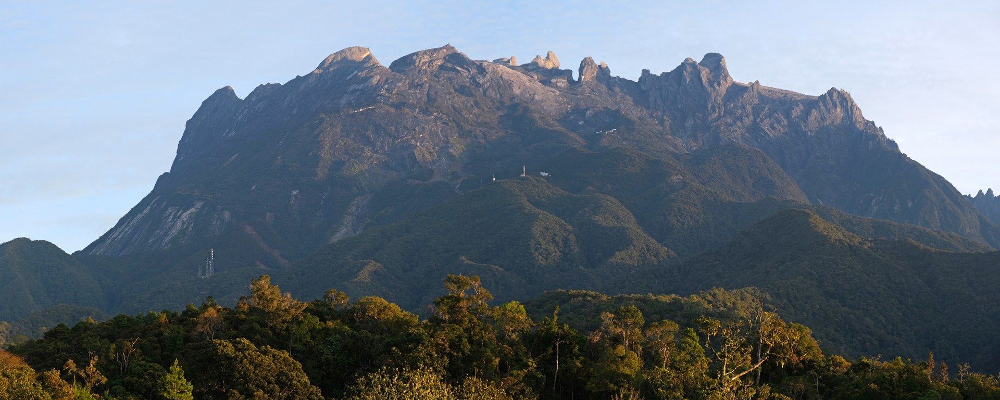
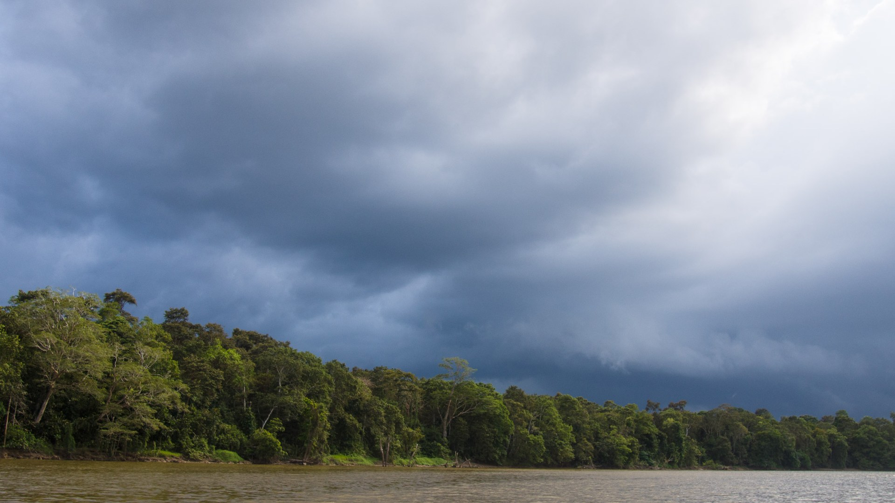

Into the highlands
Trade the rush for mountain views and cool, green surroundings.

MALAYSIAN BORNEO
Mountain mornings. Island afternoons.
A world of nature, waiting to be explored.
Bohey Dulang · Semporna
A little closer to nature01 / GET TO KNOW SABAH
On the northern tip of Borneo, Sabah brings together mountain landscapes, tropical islands and rainforest rivers. Slow down, look a little closer and discover a different side of Malaysia.
For curious travellers, the experience reaches beyond the scenery. Make time for local food, community stories and the cultures that give each place its character.
Trade the rush for mountain views and cool, green surroundings.
Follow the coastline to turquoise water and island horizons.
Watch the riverbanks and let the rainforest set the pace.
02 / FIND YOUR KIND OF ADVENTURE
From the highlands to the sea,
start with a place that speaks to you.

THE HIGHLANDS01 / RANAU
Wake up to Sabah's mountain skyline. Explore the landscapes around Kundasang and discover the natural beauty of Kinabalu Park.
Discover the highlands (official guide, opens a new tab)
THE ISLANDS02 / SEMPORNA
Look out across the lagoon at Bohey Dulang. Semporna is a starting point for exploring the islands and marine landscapes of Tun Sakaran Marine Park.
Find your island escape (official guide, opens a new tab)
THE RAINFOREST03 / KINABATANGAN
See Sabah from the water. A guided river journey offers a chance to observe forest life along the banks, with every sighting part of the surprise.
Meet the quieter side (official guide, opens a new tab)A MOMENT IN SABAH
Press play for a short photo journey through the mountains, islands and river landscapes.
03 / YOUR NEXT CHAPTER
Mountains, islands or a slow journey along the river? Tell us what your Sabah adventure would look like.
Travel with curiosity. Leave with care.
Respect local communities, keep nature clean and give wildlife space.